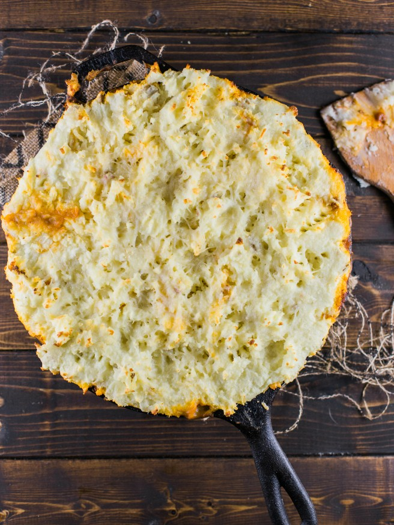

Shepherd's Pie

Description
A rustic dish full of potatoes and ground beef or lamb.
Ingredients
- 2 Tbsp olive oil
- 1 lb ground beef
- 1 lb ground lamb
- 2 garlic cloves
- 1 onion
- 1 large carrot
- 2 sprigs fresh rosemary
- 2 springs fresh thyme
- 2 Tbsp Worcestershire sauce
- 1 cup chicken stock
- 1 cup red wine (dry)
- 6 ounces tomato paste
- 6 medium potatoes
- 1/2 cup whole milk
- 8 Tbsp melted butter
- 2 whole eggs
- 5 ounce parmesan, grated
- pinch of garlic powder
- salt and pepper to taste
Directions
- Peel and chop potatoes into 1 inch (approximate) cubes
- Place the chopped potatoes into a large pot filled with water.
Bring the water to a boil and cook for around 20 minutes.
- In a large walled skillet on medium heat, begin browning the meat,
around 5 minutes.
- While the meat is cooking, finely chop the thyme and rosemary and
mince the garlic.
- Preheat the oven to 425 degrees Fahrenheit
- Once the meat is browned, drain as much fat/juice as possible.
Keep the grease to a minimum. Grate the onion and carrot into
the meat, stir and cook for about 2 minutes.
- Stir in the tomato paste, garlic, Worcestershire suace and cook
for about 1 minute.
- Add the red wine, thyme, rosemary, salt, and pepper. Let this
cook down for around 2 minutes.
- Add the chicken stock and let this cook down for about 15 minutes.
Reduce the volume by about 50%.
- While the mince is reducing, check the potatoes with a fork for
doneness.Drain and place in a large bowl.
- Mash the potatoes, then add the eggs and butter. Add milk in slowly
until a smooth consistency is achieved.
- Mix in about 4 ounces of the grated parmesan. Add salt and pepper
to taste.
- Once the meat mince has reduced, place it in a large casserole dish.
With a spatula, spread the potato mash evenly over the mince. Use a
fork to break up the smoothness and create peaks and valleys in the
mash. Top with the remaining parmesan.
- Bake in the oven for 30 minutes, or until the mash is a beautiful
golden brown. Remove from the oven and let cool for at least 5
minutes.